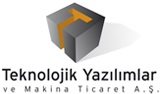

TEKYAZ'dan yine bir ilk!...
SolidWorks 2010 Türkçe videolarý
Türkçe dinleyin!
Her zaman ilklerini gerçekleþtiren Teknolojik Yazýlýmlar'dan yine bir ilk; SolidWorks 2010 videolarýný Türkçe izleyebilirsiniz... Yeni dizayn fonksiyonlarý ile iþinizi ne kadar kolaylaþtýracaðýnýzý sizlere göstermek istiyoruz...
SolidWorks 2010'da Neler Bulacaksýnýz?
Neler yapabileceðinizi buradan izleyebilirsiniz. Örneðin, SolidWorks 2010 kompleks sac parça tasarýmlarýnýz sýrasýnda iþlerinizi kolaylaþtýracak!..
SolidWorks 2010 kompleks sac parça tasarýmlarýnýz sýrasýnda iþlerinizi kolaylaþtýracak… Ýzlemek için týklayýnýz.
Gerçek tasarýmlar ile SolidWorks 2010'u izleyin. Ýlgilendiðiniz ya da tüm videolarý inceleyip SolidWorks 2010'un neler yapabileceðini kaçýrmayýn...
Teknolojik Yazýlýmlar ve Makina Tic. A.Þ.
Büyükdere Cad., Stad Han No:85 Kat:6
Mecidiyeköy Ýstanbul
Tel: (212) 217 40 84
www.tekyaz.com |
 |
Teknolojik Yazýlýmlar, bir Umtaþ A.Þ. kuruluþudur. |